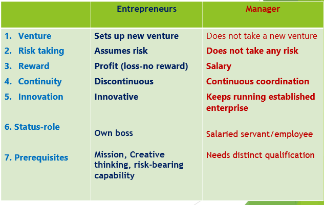

@Debuggers
Entrepreneurship and Startups
Term Entrepreneur is defined as the person who bears uncertainty and risk.
(Richard Cantiilan, French banker)
Entrepreneurship is the process of identifying opportunities in the market, marshalling the resources required to pursue these opportunities and investing the resources to explore the opportunities for profit.
Entrepreneurship
Entrepreneurship is meant the function of seeking investment and production opportunity, organising an enterprise to undertake a new production process, raising capital, hiring labour, arranging the supply of raw materials, finding site, introducing a new technique, discovering new sources of raw materials and selecting top managers for day-to-day operations of the enterprise. (B. Higgins)
Entrepreneurship involves the willingness to assume risks in undertaking an economic activity, particularly a new one. It may involve an innovation but not necessarily so. It always involves risk-taking and decision-making, although neither risk nor decision-making may be of great significance. (William Diamond)
An entrepreneur starts and runs a business. They are responsible for making key decisions, taking risks, and driving the success or failure of the business.
Entrepreneurs are often driven by a desire to create something new and innovative, and they often have a clear business vision and goals.
Entrepreneurship-LinkedIn
Entrepreneurship refers to the process of creating, launching, and managing a new business venture.
It involves identifying opportunities, taking risks, and developing innovative products or services that fulfill market needs.
Resources required by Entrepreneurs
5Ms (Resources) are required by entrepreneurs to run business :
Men
Machine
Material
Method
Money
Other resources- Minute (Time), Memory (Data/Information)
Startup
A startup is a new and emerging business, typically in the early stages of operation.
Startups are characterized by rapid growth and scalability, and they often rely on funding from investors, grants, or other sources to get off the ground and grow.
Startups often try to disrupt established markets or create new ones, and as a result, they can be high-risk ventures.
A startup is a newly established business, often focused on solving a particular problem or addressing a specific market niche.
Eligibility of Startup
- Company Age
Period of existence and operations should not be exceeding 10 years from the Date of Incorporation
- Company Type
Incorporated as a Private Limited Company, a Registered Partnership Firm or a Limited Liability Partnership
- Annual Turnover
Should have an annual turnover not exceeding Rs. 100 crore for any of the financial years since its Incorporation
- Original Entity
Entity should not have been formed by splitting up or reconstructing an already existing business
- Innovative & Scalable
Should work towards development or improvement of a product, process or service and/or have scalable business model with high potential for creation of wealth & employment.
Entrepreneurial Competencies
Competence
A competence is an underlying characteristics of a person, which results in effective and/or superior performance in a job (or venture).
A job competence may be motive, trait, skills, aspect of one’s self-image or body of knowledge which one uses.
In simple terms, a competence is a combination of body of knowledge, set of skills and a cluster of appropriate motives/traits that an individual possesses to perform a given task.
Major Entrepreneurial Competencies
Initiative
Sees and acts on opportunities
Persistence
Information seeking
Concern for high quality of work
Commitment to work contract
Efficiency orientation
Systematic planning
Problem-solving
Self-confident
Assertiveness – confronts problems and issues directly.
Persuasion
Use of influence strategy
Monitoring
Concern for employee welfare
Major Entrepreneurial Competencies
Initiative
Sees and acts on opportunities
Persistence
Information seeking
Concern for high quality of work
Commitment to work contract
Efficiency orientation
Systematic planning
Problem-solving
Self-confident
Assertiveness
Persuasion
Use of influence strategy
Monitoring
Concern for employee welfare
David McCelland Theory of Motivation
- Need for Achievement (nAch)
- Need for Affiliation
- Need for Power
Note:
Achievement motive (‘nAch’) is urge to accomplish, drive to excel, strive for success.
High ‘nAch’ motivates an entrepreneur to work hard, take calculated risks and invest resources.
Distinction between Entrepreneurs and Managers

Activity Map overview
- Adobe Analytics Activity Map is a feature within Adobe Analytics that provides a visual representation of user engagement on web pages and mobile apps.
- It enables marketers and analysts to track and analyze user interactions such as clicks, hovers, and scrolling behavior.
- Activity Map generates heatmaps and overlay reports that illustrate the popularity and effectiveness of various elements on a webpage, helping organizations optimize their digital experiences and drive higher conversions.